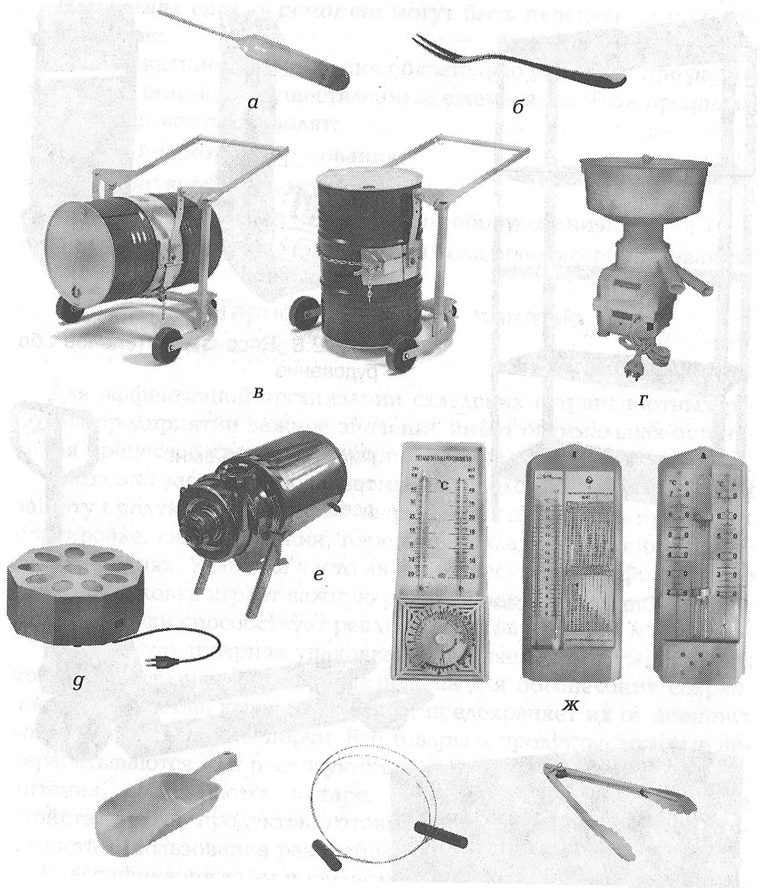

2.2. Организация складского и тарного хозяйства
2.2.1. Складское хозяйство: понятие, назначение, виды складских помещений и требования к ним. Оборудование складских помещений
Важную роль в работе предприятий общественного питания играет организация складского хозяйства.
Основными задачами складского хозяйства являются:
- организация надлежащего хранения материальных ценностей;
- бесперебойное обслуживание производственного процесса;
- отгрузка готовой продукции.
Значение складского хозяйства определяется тем, что недостатки в его организации оказывают прямое влияние на протекание производственных процессов (в частности, нарушается нормальное снабжение производства материальными ресурсами). Рациональная организация складского хозяйства — одна из предпосылок экономии затрат и повышения эффективности производства в целом.
Правильная организация складского хозяйства должна обеспечивать сохранность материальных ценностей, исключить потери, недостачи и пересортицу. Через склады средства и предметы труда перемещаются по стадиям технологической переработки, в результате чего полученные извне сырье и материалы трансформируются в готовую продукцию. От деятельности работников складского хозяйства в значительной степени зависит выполнение таких важных показателей работы предприятия, как себестоимость продукции, прибыль, рентабельность, рост производительности труда, выполнение договорных обязательств по поставкам продукции.
В складском хозяйстве предприятий, как и в основном производстве, на приведение в действие складского оборудования и обеспечение нормальных условий труда для работников расходуются топливно-энергетические и материальные ресурсы. Длительное время складскому хозяйству уделялось мало внимания, однако в последние годы многие предприятия питания начали понимать, что складское хозяйство как важное звено в производственной структуре оказывает значительное влияние на результаты производства. Без складского хозяйства предприятие не смогло бы бесперебойно обеспечивать производство сырьем и материалами.
Упорядоченное ведение складского хозяйства — первое условие эффективного управления запасами. Обеспечить порядок на складе — значит сформировать у работников мотивацию к бережливому обращению с запасами, упорядочить процессы хранения запасов и введения новых товаров в ассортимент, ранжировать запасы по приоритетности, своевременно осуществлять инвентаризацию товара и обработку документации. Пути реализации этих условий различны, главное — это результат, т. е. порядок. Обычно наведение порядка в работе склада дает прямой экономический эффект в виде снижения запасов, увеличения оборачиваемости, роста прибыли компании.
Классификация складов производится в зависимости от следующих критериев:
- их роли в процессе производства и подчиненности — снабженческие подчиняются отделу материально-технического обеспечения и питают производство основными материалами, покупными полуфабрикатами и прочими материальными ресурсами; производственные подчиняются производственному или какому-либо другому отделу и используются для хранения полуфабрикатов собственного изготовления и оснастки; сбытовые подчиняются отделу сбыта и предназначены для хранения готовой продукции;
- особенностей хранения и номенклатуры хранимого:
- универсальные (хранение разнообразной продукции);
- специализированные — хранение однородной продукции;
- сферы обслуживания;
- конструктивных особенностей складов — закрытые склады, полузакрытые склады, открытые площадки.
Место расположения складских помещений — первые, цокольные, подвальные этажи.
Функции складских помещений следующие:
- приемка поступающих продуктов;
- краткосрочное хранение;
- отпуск товара на производство.
Требования к размещению складских помещений:
- компоновка помещений производится по направлению движения сырья и продуктов;
- они должны иметь удобную связь с производственными помещениями.
На рис. 2.5 представлен комплекс складских операций.
рис. 2.5
Состав и площади складских помещений для различных типов предприятий общественного питания устанавливаются согласно Строительным нормам и правилам проектирования предприятий общественного питания (СНиП II-Л-8—71) в зависимости от типа и мощности предприятия. Устройство складов должно обеспечить:
- полную количественную и качественную сохранность товаров;
- надлежащий режим хранения;
- рациональную организацию выполнения складских операций;
- нормальные условия труда.
Количество складских помещений зависит от объемов и мощности предприятия.
На небольших предприятиях — не менее двух:
- одна общая для хранения мясных, рыбных полуфабрикатов, гастрономии, молочных продуктов (охлаждаемая);
- другая — неохлаждаемая для нескоропортящихся продуктов.
В средних и крупных предприятиях — не менее четырех:
- две — охлаждаемые;
- камера для сухих продуктов;
- овощная камера.
Дополнительные помещения организуют в следующих целях:
- для хранения белья;
- хранения инвентаря;
- хранения тары;
- оформления транспортных и сопроводительных документов.
Требования к внутренней планировке складских помещений следующие (табл. 2.1):
- обеспечение рациональных способов размещения и укладки;
- исключение отрицательного влияния товаров друг на друга;
- недопущение встречных движений товаров;
- возможность применения средств механизации.
| Объемно-планировочные требования | Санитарно-гигиенические требования |
|---|---|
| 1. Складская площадь должна быть компактна, для каждого товара выделена площадь | 1. Стены должны быть защищены от проникновения грызунов и покрашены масляной краской, а стены охлаждаемых камер покрыты плиткой |
| 2. Оборудование должно быть рационально размещено, предусмотрена необходимая площадь для проездов | 2. Стены охлаждаемых камер должны быть покрыты плиткой для систематической влажной уборки |
| 3. Высота складских помещений — не менее 2,5 м, охлаждаемых камер — 2,4 м | 3. Освещение в кладовых овощей и охлаждаемых помещений должно быть искусственным |
| 4. Подъезд транспорта и разгрузка товаров должны осуществляться с внутреннего двора | 4. В других помещениях допускается естественное освещение |
| 5. Для спуска товара в подвальные помещения должны быть оборудованы люки с дверями и пандусами | 5. Вентиляция должна быть искусственной и механической |
| 6. Для приемки грузов предусматриваются разгрузочные площадки | 6. Полы должны обеспечивать безопасное передвижение людей, грузов, транспортных средств |
| 7. Охлаждаемые камеры должны размещаться одним блоком с общим тамбуром | 7. Ширина коридоров складов принимается 1,3 — 1,8 м, а если применяются тележки — то 2,7 м |
Инструменты и инвентарь. Инвентарь для вскрытия тары включает инструменты для вскрытия деревянной, металлической и мягкой тары. Для вскрытия деревянных ящиков используют молотки, клеши, гвоздодеры обыкновенные и трубчатые, а также комбинированные инструменты: гвоздодер-молоток, гвоздодер-ножницы, молоток-гвоздодер, ножницы, молоток-топорик с гвоздодером.
Обручи с деревянных бочек снимают с помощью специального съемника, состоящего из металлической набойки с деревянной ручкой и крючка. Набойку устанавливают на поверхность укупорочного дна бочки и захватывают обруч крючком, шарнирно соединенным с деревянной ручкой. Легким ударом руки по верхнему концу ручки съемника снимают обруч. Укупорочное дно бочки извлекают с помощью фигурного рычага. Пробки металлических бочек отвинчивают торцевым ключом, представляющим собой стальной стержень квадратного сечения с отогнутым под прямым утлом концом. Мешки и картонные коробки вскрывают серповидным ножом с утолщением на конце лезвия, предохраняющим тару от случайных порезов.
Все инструменты и инвентарь складских помещений показаны на рис. 2.6, а оборудование складских помещений — на рис. 2.7 — 2.10.
рис. 2.6
а - ареометр; б - вилка для сельди; в - приспособление для перемещения бочек; г - молокомер; д - овоскоп; е - насос для растительного масла; ж - психрометры; з совок для сыпучих продуктов; и — струна для разрезания масла; к — кондитерские щипцы

рис. 2.7
Стеллаж для размещения и хранения товаров.jpg)
рис. 2.8
Весоизмерительное оборудование.jpg)
рис. 2.9
Подъемно-транспортное оборудование.jpg)
рис. 2.10
Холодильная камера.jpg)
Периодичность технического обслуживания оборудования. Для нормальной работы оборудования необходимо выполнять мероприятия по обслуживанию оборудования. Для обслуживания заключают договор между ремонтно-монтажным комбинатом и предприятием. При планировании обслуживания оборудования складских помещений составляют перспективный план сроком на 5 лет. На основании перспективного плана и в соответствии с состоянием оборудования составляют годовой план обслуживания и ремонта складского оборудования.
В плане отражаются:
- вид ремонта;
- календарное время;
- продолжительность ремонта.
Изменение сроков ремонта могут быть перенесены не более чем на 6 мес.
Обслуживание оборудования обязательно включает профилактический ремонт, осуществляемый ежемесячно. При профилактическом ремонте проводят:
- внешний осмотр оборудования;
- санитарную очистку деталей;
- проверку заземления холодильного оборудования;
- контроль температурного режима холодильного оборудования.
▲ НАВЕРХ ▲
► К следующему подразделу 2.2.2